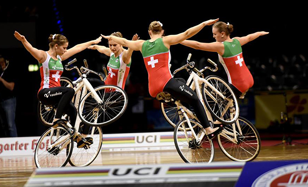
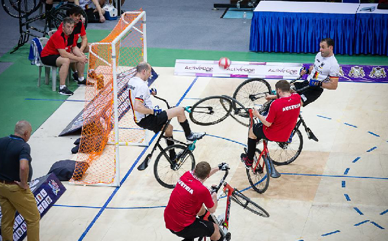
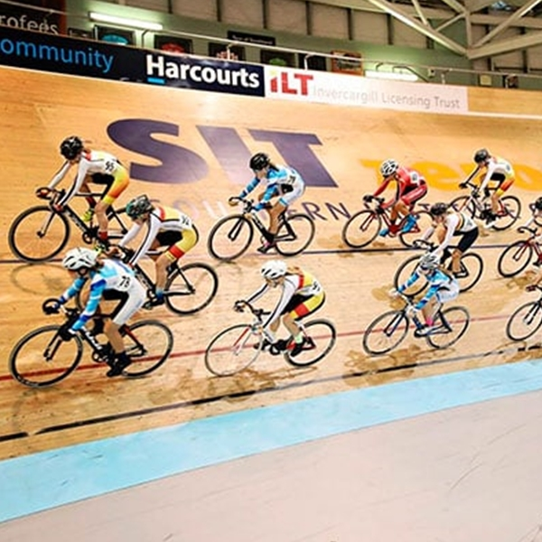
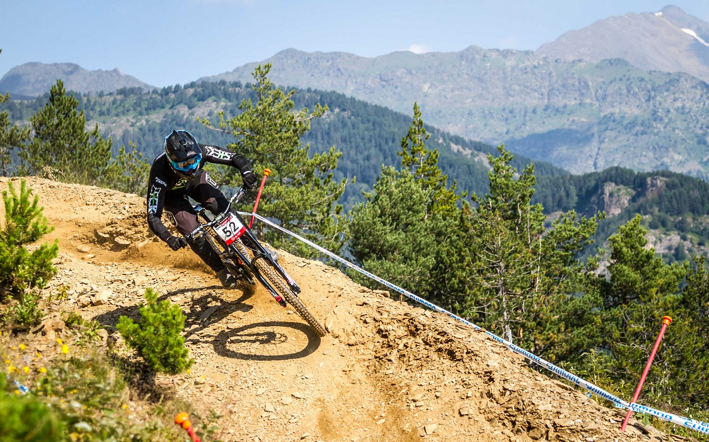
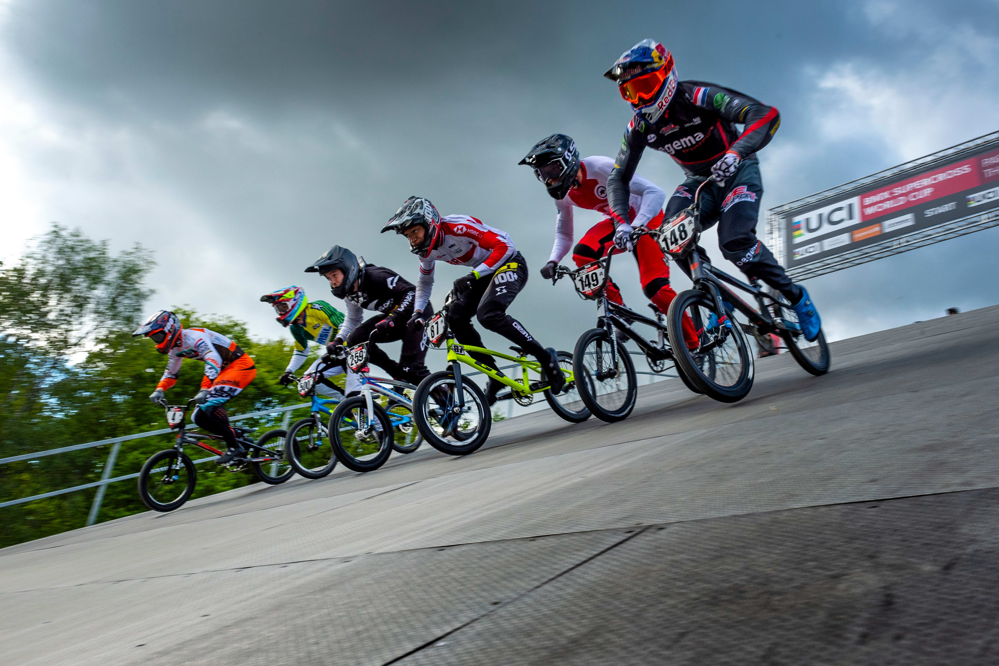
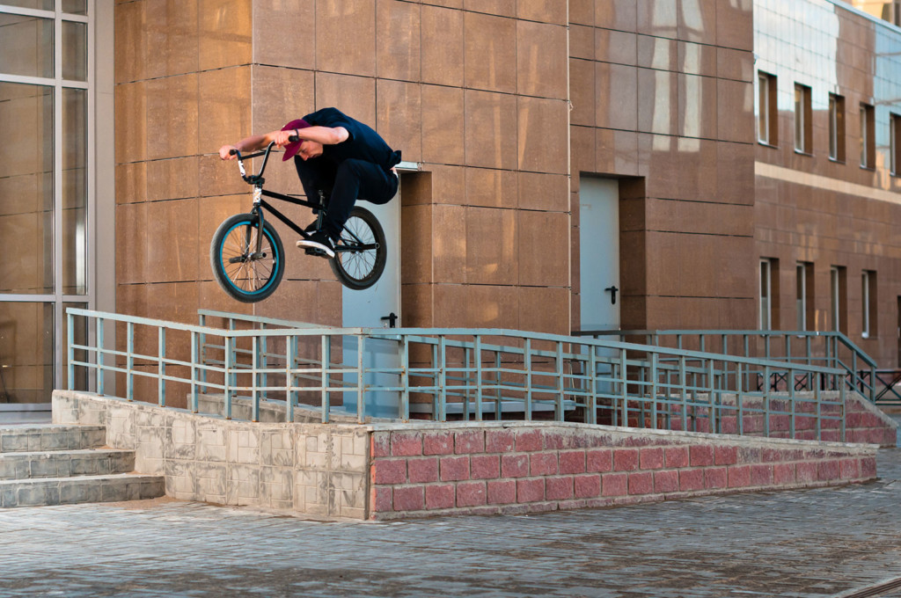
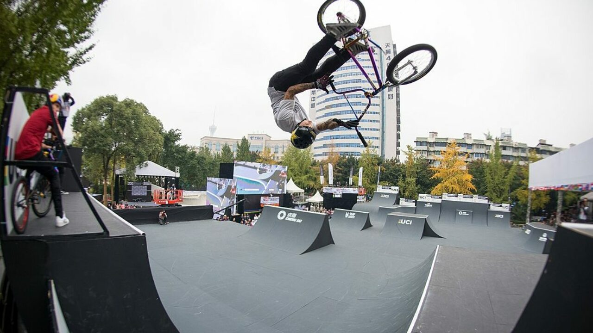

.png)
Ciclismo en sala
Este se sub divide en dos categorias:
Ciclismo ArtísticoDeporte de interior similar al patinaje artístico sobre hielo y a la gimnasia, practicado con bicicletas especiales. Es una disciplina que requiere destreza, equilibrio, concentración y coraje. Este deporte es muy popular en Alemania, donde existen 10.000 licencias. |
 |
CiclobolDeporte exlusivamente masculino, en el que se enfrentan dos equipos que tratan de meter gol en la portería contraria. Procede del fútbol, pero en el que se utilizan bicicletas. |
 |
|  |
El ciclismo en pista es una modalidad que se disputa en un velódromo de 250 metros de perímetro y que se caracteriza por desarrollarse con bicicletas de piñón fijo. Las fixie tal y como se conocen a este tipo de bicicletas no tienen frenos y el único sistema para reducir la velocidad es el sistema de contrapedal. |
|
Especialidad en la cual se compite en un camino totalmente en bajada, con saltos y obstáculos tanto naturales como artificiales. Las bicicletas llevan suspensiones delantera y trasera con amortiguadores y aceite hidráulico, además de frenos de disco, neumáticos de mayor anchura y protectores de platos o guía cadena. El equipo de protección cuenta con casco cerrado, peto, coderas así como antebrazos, espinilleras-rodilleras, goggles y guantes. Es la modalidad más extrema en el deporte del ciclismo. |
 |
|
BMX es la abreviación de Bicycle Motocross, una modalidad nacida en California (Estados Unidos) en 1969, cuando un joven de nombre Scot Breithaupt decide utilizar una
bicicleta en una pista de Motocross. Un fabricante de bicicletas llamado Al Fritz, alertado por la alta
demanda de los jóvenes, comenzó a fabricar bicicletas similares a motos.
|
 |
Ciclismo Freestyle urbanoConsiste en hacer trucos en la calle, plazas, escaleras, etc. |
 |
Ciclismo Freestyle en rampaEste se practica sobre un circuito previamente hecho. |
 |